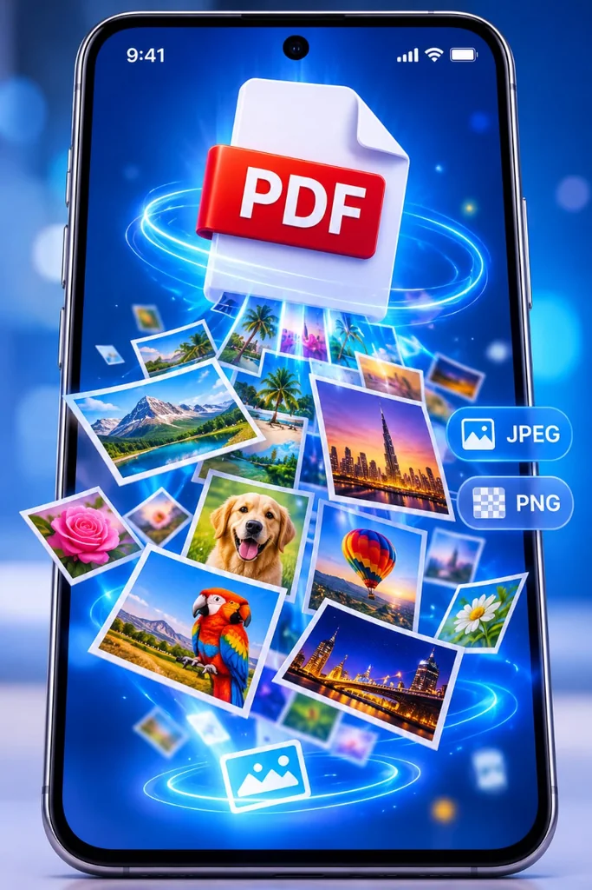
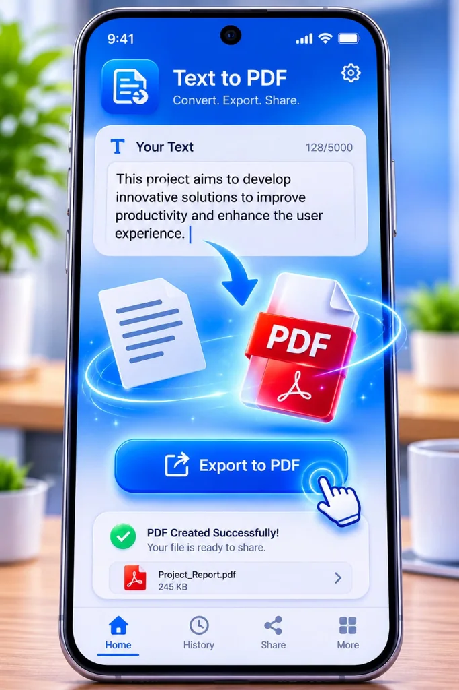

تحويل صور PNG وJPEG إلى PDF
استخدم أداة إنشاء PDF من الصور في الموقع واختر صورة واحدة أو عدة صور بصيغتي PNG أو JPEG. يتحول كل ملف صورة إلى صفحة في المستند، ويصبح ترتيب اختيار الصور هو ترتيب الصفحات. راجع القائمة قبل إنشاء الملف، ثم نزّل نسخة PDF الناتجة.

تحويل صفحات PDF إلى صور
إذا كنت تريد إرسال صفحة أو استخدامها كصورة، افتح أداة تحويل PDF إلى صور في الموقع، واختر ملف PDF ثم حدد PNG أو JPEG. بعد انتهاء التحويل، نزّل الصور في ملف ZIP. تتم معالجة الملفات داخل متصفحك ولا تُرفع إلى خادم الموقع.
تحويل النص إلى PDF في تطبيق أندرويد
يوفر تطبيق Nexora PDF Office أداة لكتابة النص وتصديره بصيغة PDF. بعد إنشاء الملف، افتحه للتحقق من تنسيق الفقرات وترتيب الصفحات، خصوصًا عند استخدام العربية أو نص طويل.

كيف تختار صيغة الملف؟
اختر PDF عندما تريد جمع عدة صفحات في مستند يسهل حفظه ومشاركته. استخدم PNG عندما تحتاج إلى صورة واضحة دون ضغط ضياعي، أو JPEG عندما يكون حجم الصورة الأصغر أولوية. راجع نتيجة التحويل قبل إرسالها للتأكد من وضوح النصوص والصور وترتيب الصفحات.